CS184/284A Spring 2025 Homework 2 Write-Up
Names: Hima Kolaven and Mateus Ikezaki
Link to webpage:
https://cal-cs184-student.github.io/hw-webpages-bloom-boomers-1/
Link to GitHub repository:
cs184.eecs.berkeley.edu/sp25
Overview
In this project, we implementing bezier curves and learned about how we can utilize the halfedge representation of geometry to render
smooth curves. It was interesting to see how loop subdivision can be used to create a smooth effect. We also became better at visualizing geometric elements
by drawing out diagrams to simulate edge flips and splits. This gave us a deeper understanding of the process, and how it results in complex surfaces.
Overall, we are glad that we have another graphics tool to add to our toolkit!
Section I: Bezier Curves and Surfaces
Part 1: Bezier curves with 1D de Casteljau subdivision
The de Casteljau’s algorithm consists of interpolating control points and recursively interpolating
the resulting intermediate points to get one final point lying on the desired bezier curve. We implemented
the evaluateStep function which performs a single recursive step of the algorithm, by taking a vector
of input control points, interpolating their positions and returning a vector with the interpolated
points.
|
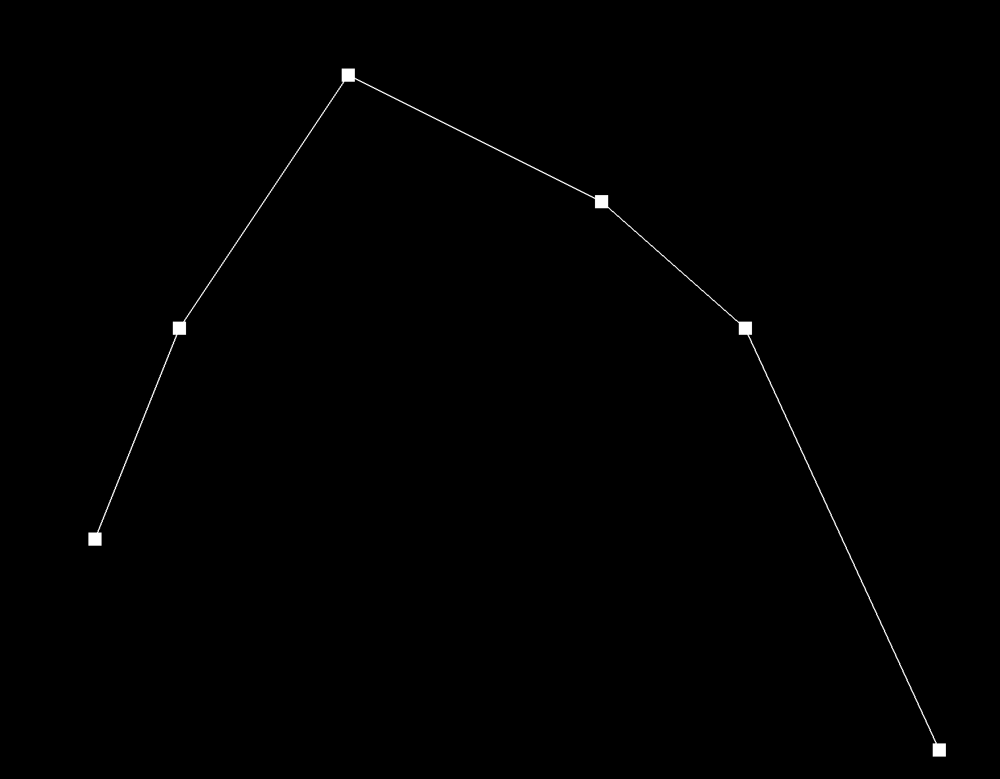
Original Curve
|
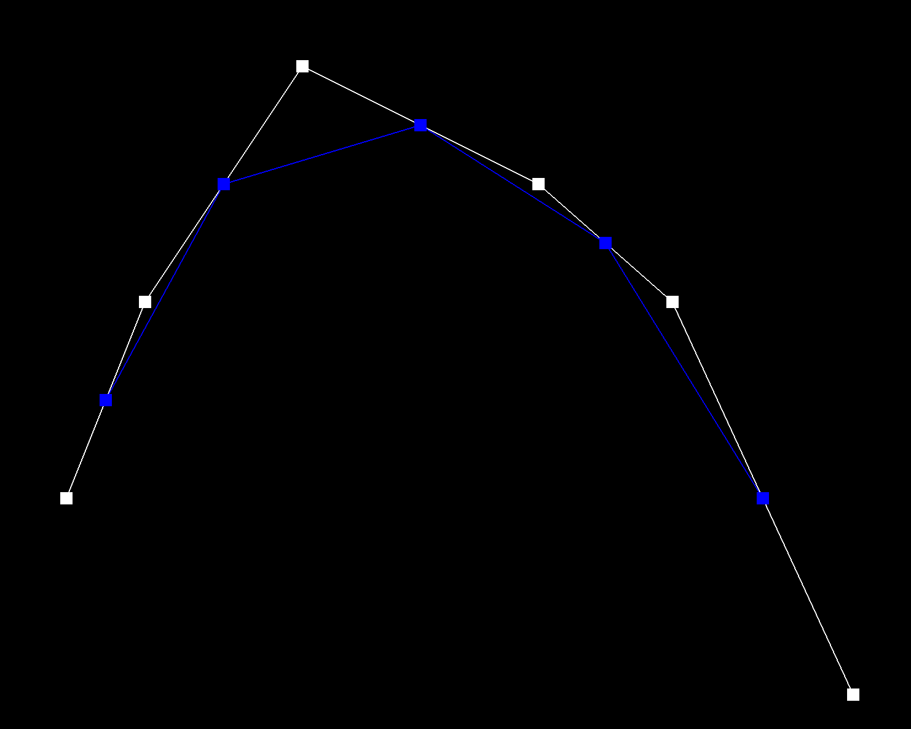
Step 1
|
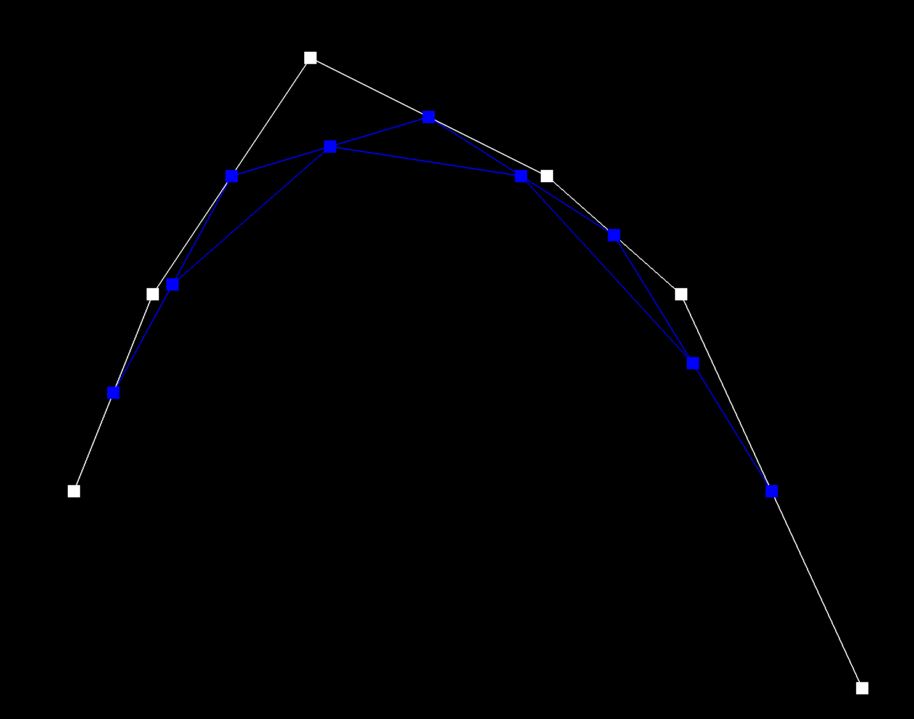
Step 2
|
|
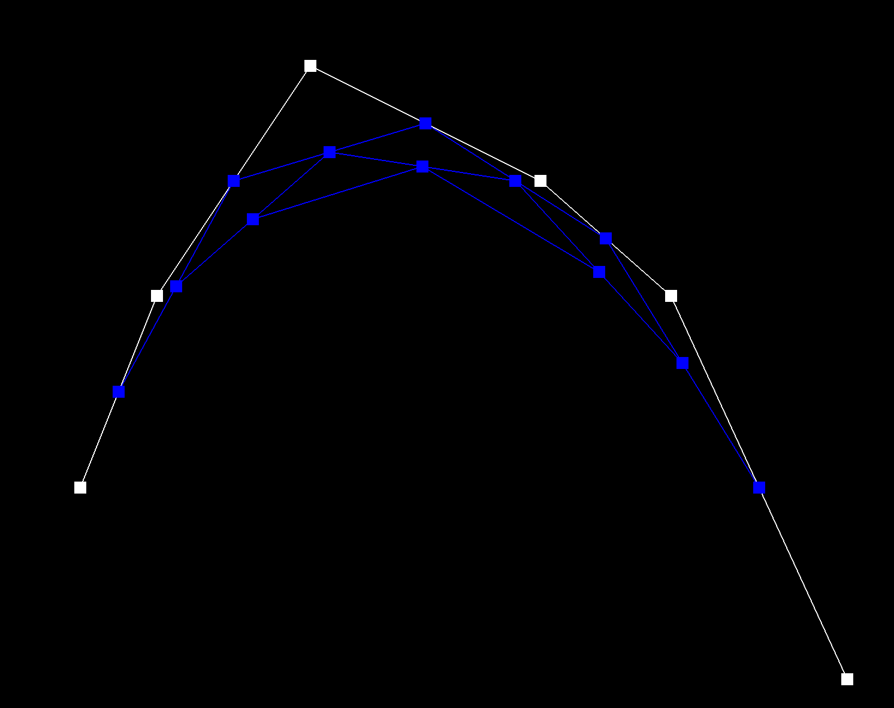
Step 3
|
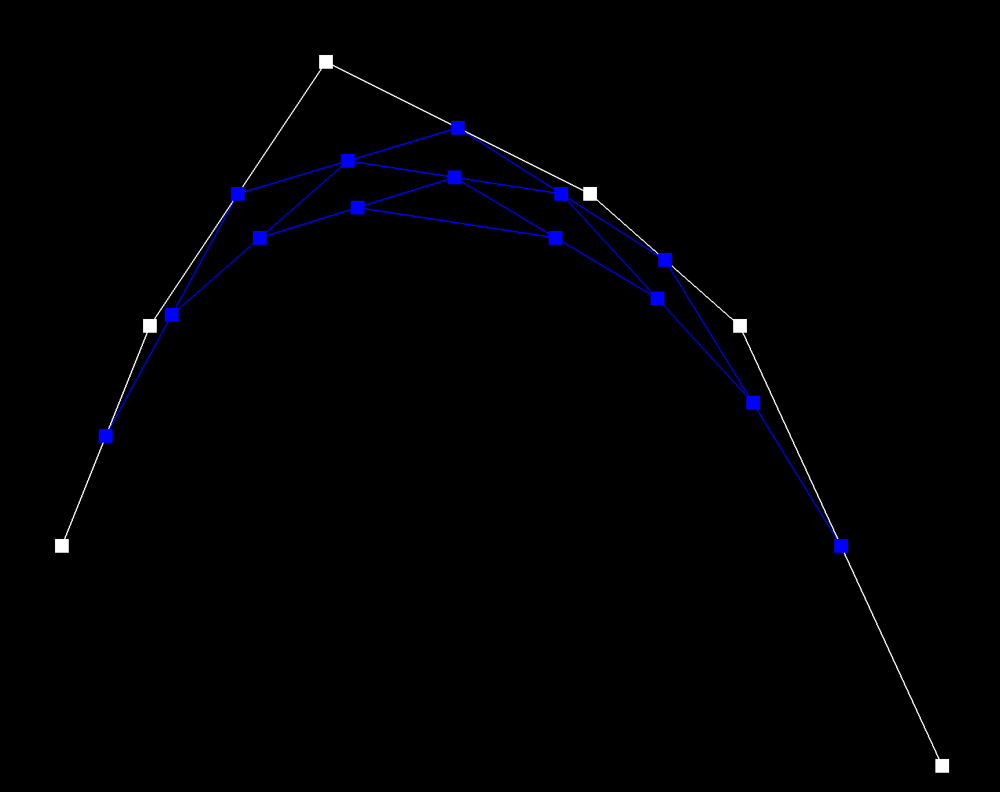
Step 4
|
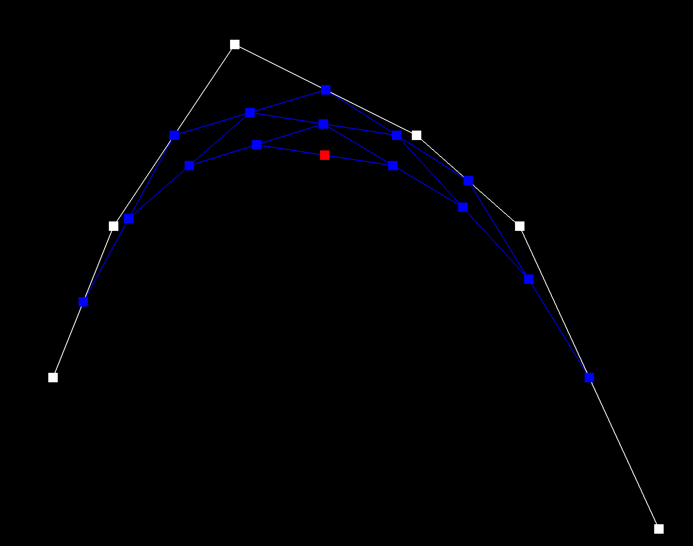
Step 5
|
|
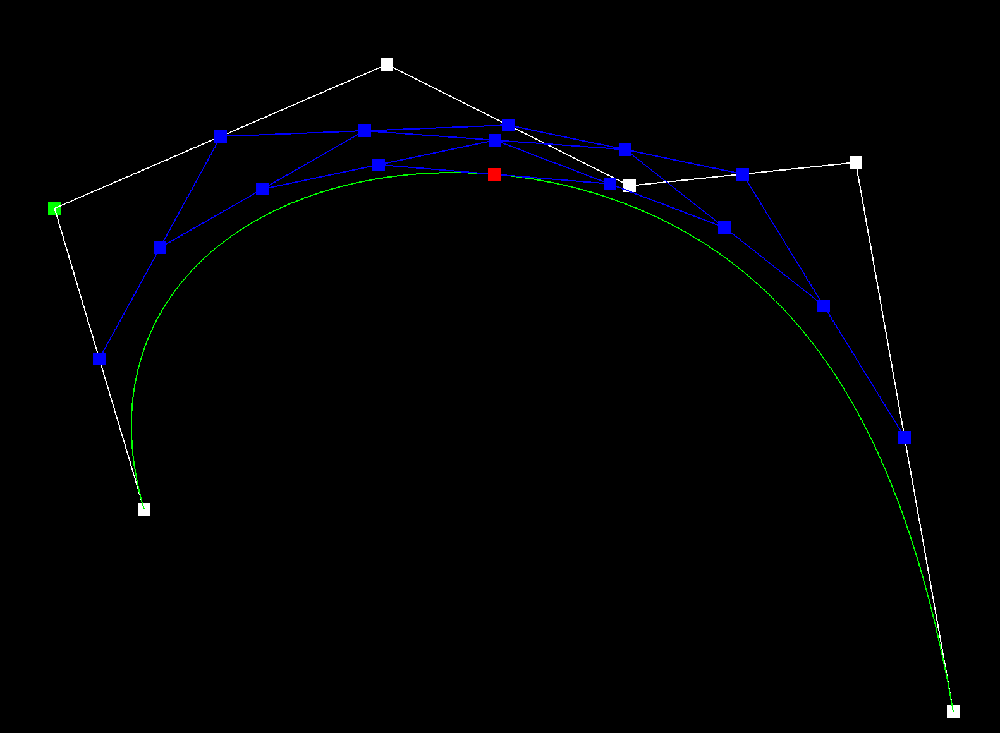
Modified Control Points
|
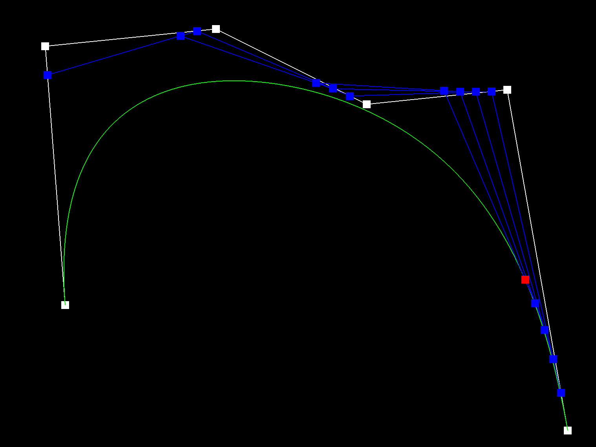
Modified t Parameter
|
Part 2: Bezier surfaces with separable 1D de Casteljau
The de Casteljau algorithm also allows us to render smooth curves by calculating bezier surfaces.
Given a set of control point sets, we get the point returned by the de Casteljau algorithm for each
set of control points. Then we apply de Casteljau on the returned points to get a "moving surface",
which sweeps out a 2D surface.
Our implementation consisted of 3 functions: evaluateStep, evaluate1D and evaluate.
evaluateStep is the same function from the previous part, but performed on 3D vectors instead of 2D.
evaluate1D takes in a set of control points and repeatedly calls evaluateStep on the input set to return
the moving surface control point corresponding to that set.
evaluate performs the de Casteljau algorithm on each set of control points by calling evaluate1D on each set of
control points, then calls evaluate1D on the evaluated control points of the moving surface and returns the
point which defines the moving surface.
Section II: Triangle Meshes and Half-Edge Data Structure
Part 3: Area-weighted vertex normals
-
We implemented area-weighted vector normals by first retrieving the half-edge of the given vertex.
We maintained a sum of area-weighted normals, initialized to zero.
-
Then, we iterated through each neighboring triangle of the given vertex by accessing the face
associated with the current half-edge and going to the next triangle by calling halfedge->twin()->next().
-
For each face (halfedge->face()), we incremented the sum by multiplying the face's area by its normal.
The face's area was computed by taking the cross product of two of its adjacent edges and dividing the result by two.
The normal of each face was obtained using the provided normal() function.
-
After processing all neighboring triangles, we returned the unit vector of the accumulated sum.
|
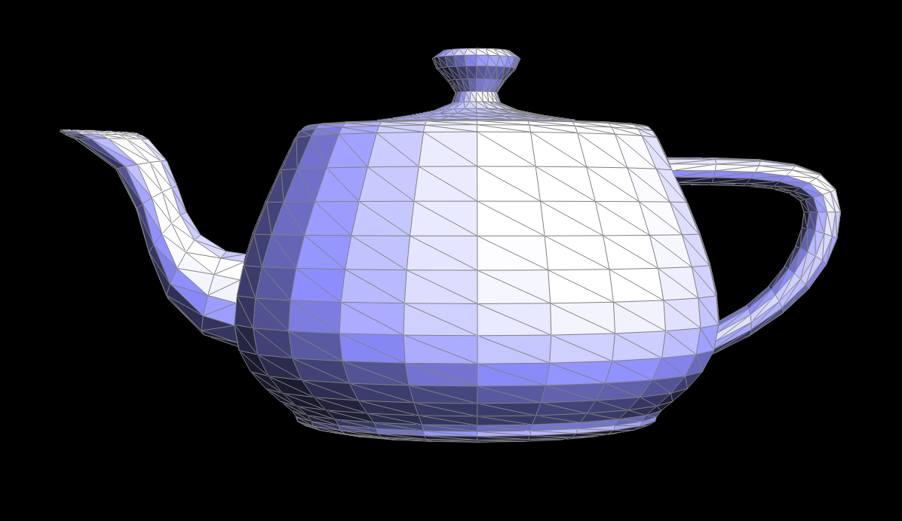
Without Vertex Normals
|
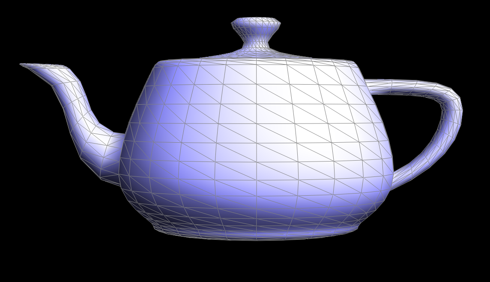
With Vertex Normals
|
Part 4: Edge flip
-
Diagram we used to visualize flips and keep track of what mesh elements to change:
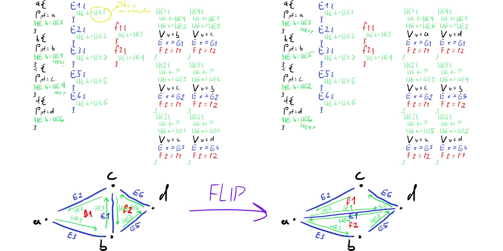
-
We implemented flipEdge by following the diagram provided as well as our own diagram closely. We first
labeled each vertex, face and half-edge relative to the input e0 (for instance, point b will always be the
vertex corresponding to e0's half-edge). Then it was simply a matter of reassigning class components of each
mesh element. Namely, here are the reassignments we made:
he1->vertex() = a;
he1->next() = he6;
he2->next() = he1;
he3->next() = he5;
he3->face() = f2;
he4->vertex() = d;
he4->next() = he3;
he5->next() = he4;
he6->next() = he2;
he6->face() = f1;
f1->halfedge() = he1;
f2->halfedge() = he4;
b->halfedge() = he5;
c->halfedge() = he2;
-
-
Before flip:
-
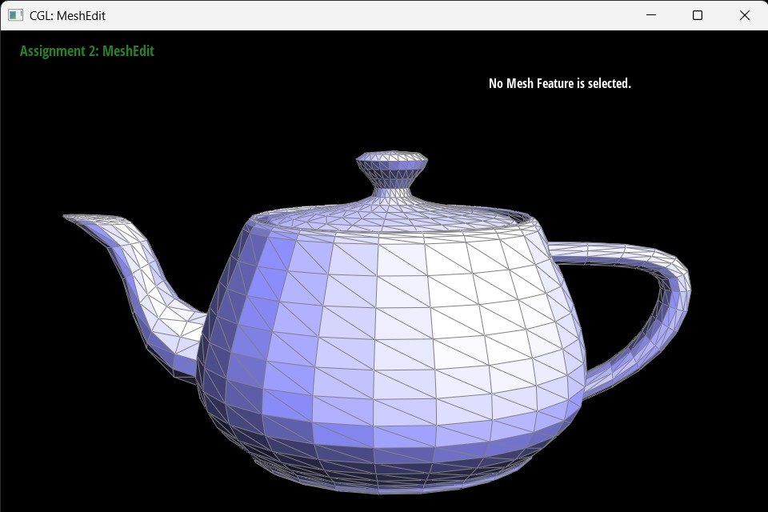
-
After flip:
-
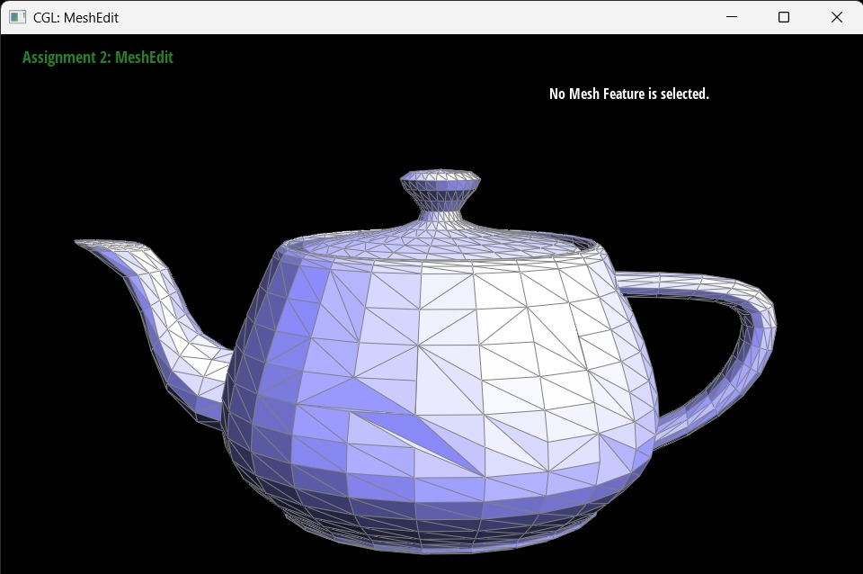
-
For this part we didn't experience any eventful debugging, the hardest part was wrapping our heads around
how to approach this problem in the first place, coming up with the diagram, and trusting that our implementation
was abstract enough work for any given edge (except boundaries of course, in which case we simply returned).
Part 5: Edge split
-
We implemented edge split very similarly to edge flip.
We first, labeled all the original relevant vertices, edges, halfedges, and faces
before splitting the given edge.
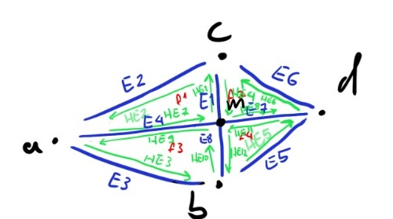
With Vertex Normals
-
Then, we created a new vertex at the midpoint of the given edge by computing and setting it's
position to the sum of the 2 endpoint vertices of the given edge, divided by 2.
We created 3 new edges and 2 new associated halfedges for each. We also created 2 new faces, representing the faces that would be below the new
midpoint vertex.
-
We reset pointers to ensure that each half-edge correctly references the appropriate vertex, edge, face, twin, and next half-edge.
We first update the half-edge pointers for all vertices, edges, and faces, ensuring they point to the correct half-edges.
Then, we set the neighbor relationships (next and twin) for each half-edge, maintaining the connectivity of the mesh structure
after the split. We did this as follows:
// setting all VERTICES
a->halfedge() = h_am;
b->halfedge() = h_bm;
c->halfedge() = he4;
d->halfedge() = h_dm;
m->halfedge() = he1;
// setting all EDGES
e0->halfedge() = he1;
e2->halfedge() = he2;
e3->halfedge() = he3;
am->halfedge() = h_am;
e5->halfedge() = he5;
e6->halfedge() = he6;
dm->halfedge() = h_dm;
bm->halfedge() = h_bm;
// setting all FACES
f1->halfedge() = h_am;
f2->halfedge() = h_md;
f3->halfedge() = h_ma;
f4->halfedge() = h_mb;
// setting all HALFEDGES
he1->setNeighbors(he2, he4, m, e0, f1);
he2->setNeighbors(h_am, he2->twin(), c, e2, f1);
he3->setNeighbors(h_bm, he3->twin(), a, e3, f3);
he4->setNeighbors(h_md, he1, c, e0, f2);
he5->setNeighbors(h_dm, he5->twin(), b, e5, f4);
he6->setNeighbors(he4, he6->twin(), d, e6, f2);
h_bm->setNeighbors(h_ma, h_mb, b, bm, f3);
h_mb->setNeighbors(he5, h_bm, m, bm, f4);
h_am->setNeighbors(he1, h_ma, a, am, f1);
h_ma->setNeighbors(he3, h_am, m, am, f3);
h_md->setNeighbors(he6, h_dm, m, dm, f2);
h_dm->setNeighbors(h_mb, h_md, d, dm, f4);
|
Before
|
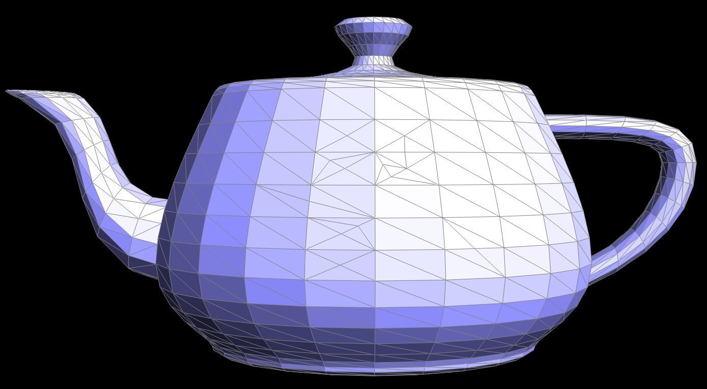
Edge Splits
|
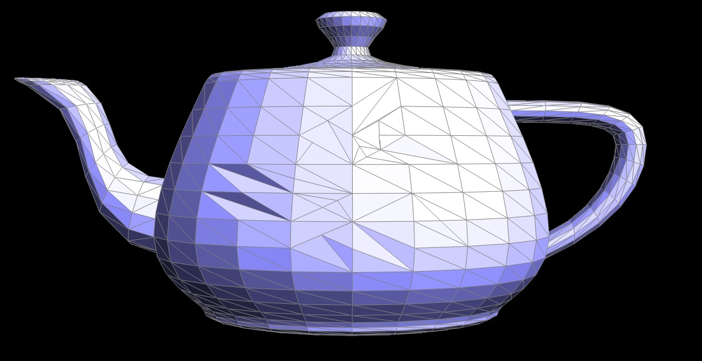
Edge Splits and Flips
|
-
With so many steps and elements to keep track of, splitting was particularly troublesome for us. Essentially,
every time we split an edge, we were getting a bug in which a connecting face had a chance to simply vanish.
This bug was very confusing to us, because some faces would only sometimes vanish, seemingly at random. We spent
an entire day trying to fix it. After going to office hours, it turned out that we were assigning the wrong face
to one of the half-edges due to a typo.
Part 6: Loop subdivision for mesh upsampling
-
1) For this part we followed the suggested pipeline in the spec.
We began by iterating through all the original vertices in the input mesh and
computing the new positions with this formula:
(1 - n * u) * original_position + u * original_neighbor_position_sum
2) We then iterated through all the original edges and computed the new position of the vertex which will split these edges, using this formula:
3/8 * (A + B) + 1/8 * (C + D)
While iterating, we also added each edge to a list of original edges, used in the next part.
3) Next, we iterated through the original edges list, and split each one. We set the new position of each new
midpoint edge to saved in each edge's newPosition variable.
4) We iterated through all the edges (including the newly created ones) and flipped any new edge (not part of the original edges), which
connected a new vertex to an old one.
5) Finally, we set each vertex's position to the one stored in their newPosition variables.
-
|
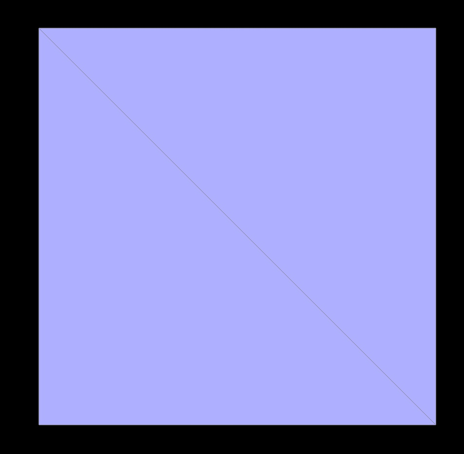
Before
|
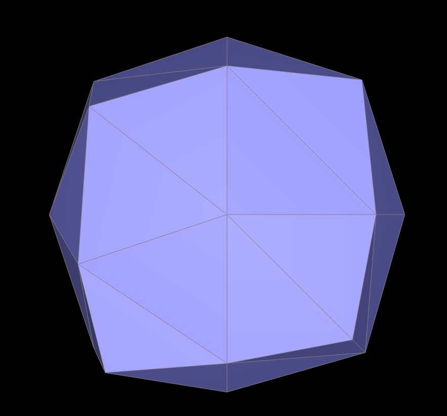
1 Iteration of Loop Subdivision
|
|
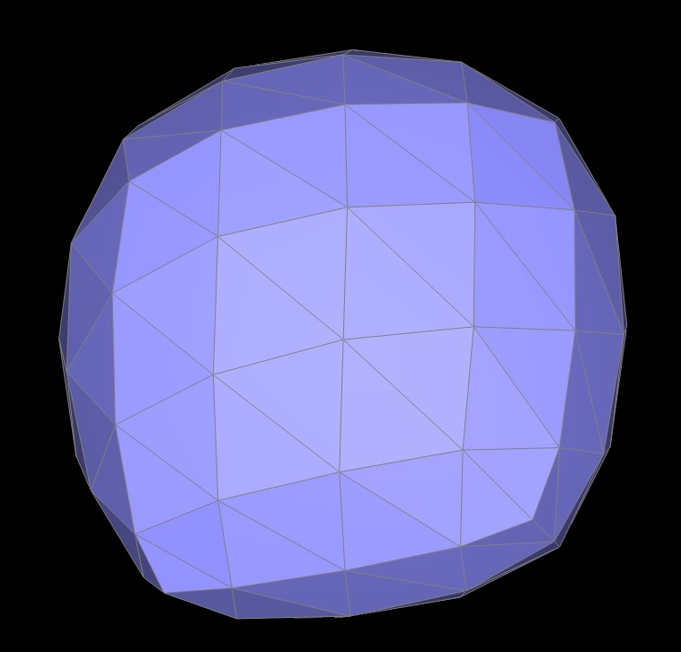
2 Iterations of Loop Subdivision
|
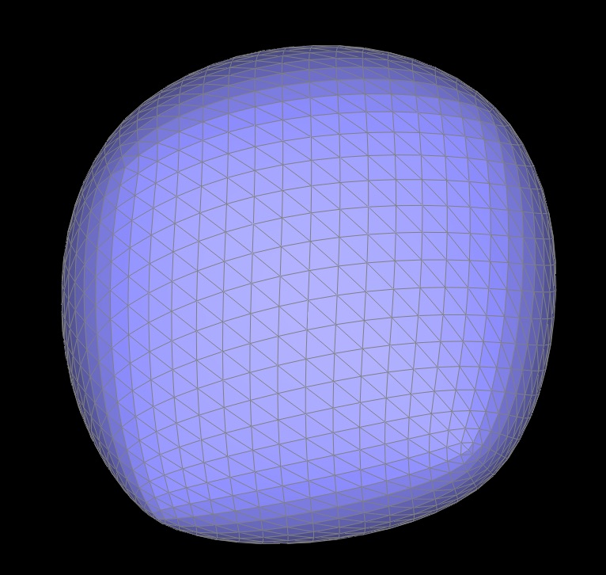
Many Iterations of Loop Subdivision
|
It seems like the the subdivided mesh curves towards the initial vertices following along the edges
connecting to each original vertex. So the more we subdivide, the more the sharp corners lose their form,
we can see for instance that the cube barely resembles a cube at all after a few subdivisions. This
likely happens because the vertices of a cube don't have an equal amount of edges connecting to them and
from even directions. So if we pre split the edges that cross the faces of the cube, such that all vertices
have an equal amount of edges connecting to them, we retain the form a lot better, as shown below.
|
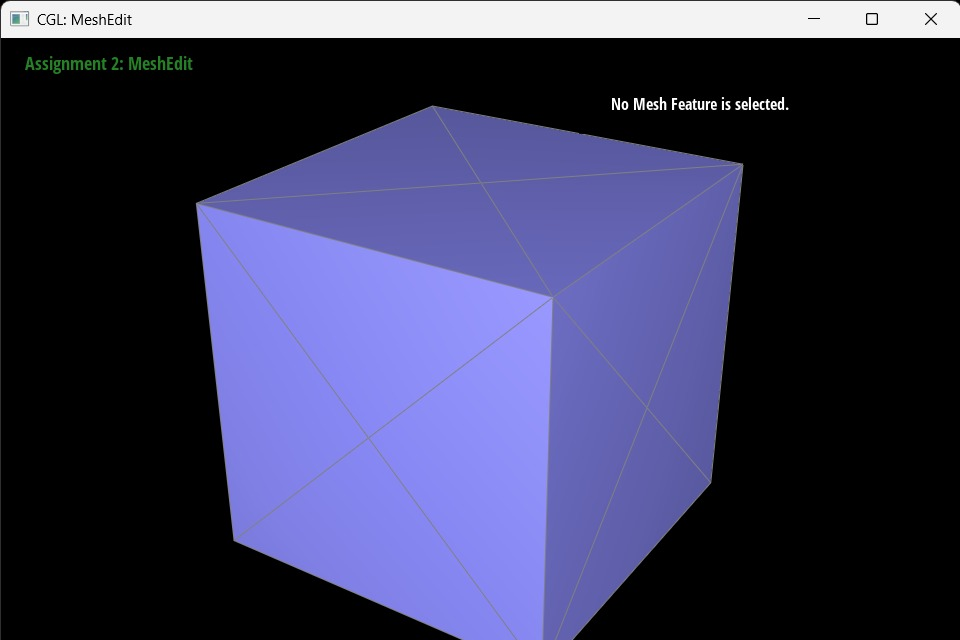
Preprocessed Cube
|
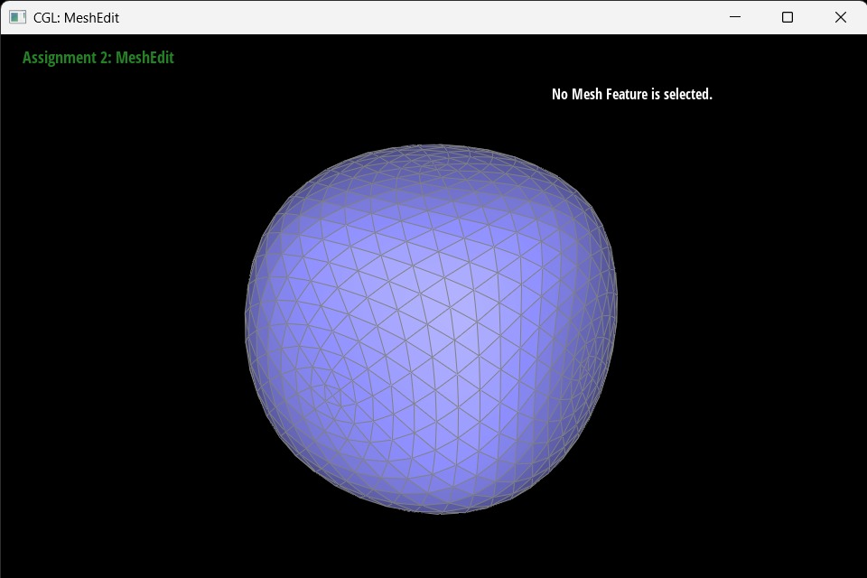
After 3 Loop Subdivisions
|
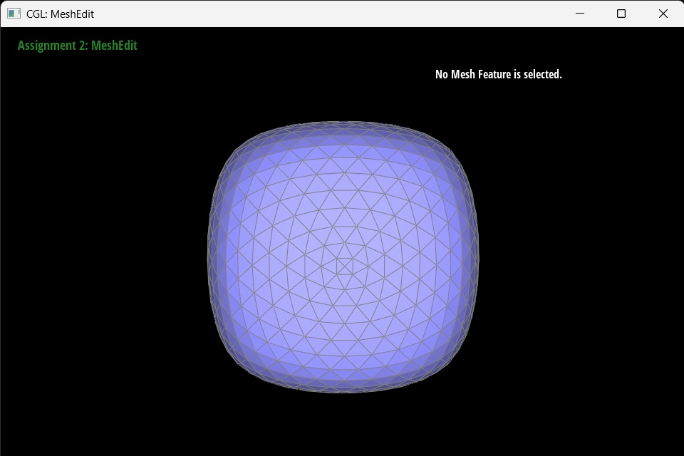
After 3 Loop Subdivisions (front view)
|